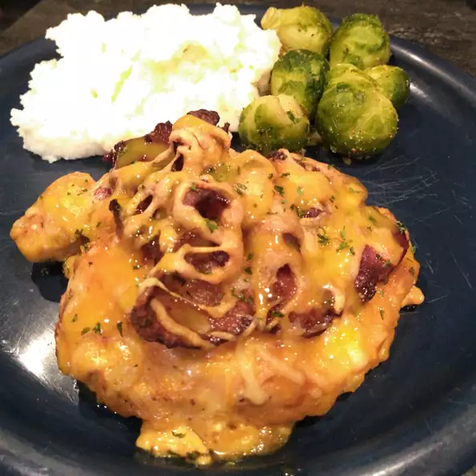

Aussie Chicken

This is a plate of Aussie Chicken
Ingredients
- 4 skinless, boneless chicken breast halves - pounded to 1/2 inch thickness
- 2 teaspoons seasoning salt
- 6 slices bacon, cut in half
- 1/2 cup prepared yellow mustard
- 1/2 cup honey
- 1/4 cup light corn syrup
- 1/4 cup mayonnaise
- 1 tablespoon dried onion flakes
- 1 tablespoon vegetable oil
- 1 cup sliced fresh mushrooms
- 2 cups shredded Colby-Monterey Jack cheese
- 2 tablespoons chopped fresh parsley
Steps
- Rub the chicken breasts with the seasoning salt, cover and refrigerate for 30 minutes.
- Preheat oven to 350 degrees F (175 degrees C). Place bacon in a large, deep skillet. Cook over medium high heat until crisp. Set aside.
- In a medium bowl, combine the mustard, honey, corn syrup, mayonnaise and dried onion flakes. Remove half of sauce, cover and refrigerate to serve later.
- Heat oil in a large skillet over medium heat. Place the breasts in the skillet and saute for 3 to 5 minutes per side, or until browned. Remove from skillet and place the breasts into a 9x13 inch baking dish. Apply the honey mustard sauce to each breast, then layer each breast with mushrooms and bacon. Sprinkle top with shredded cheese.
- Bake in preheated oven for 15 minutes, or until cheese is melted and chicken juices run clear. Garnish with parsley and serve with the reserved honey mustard sauce.